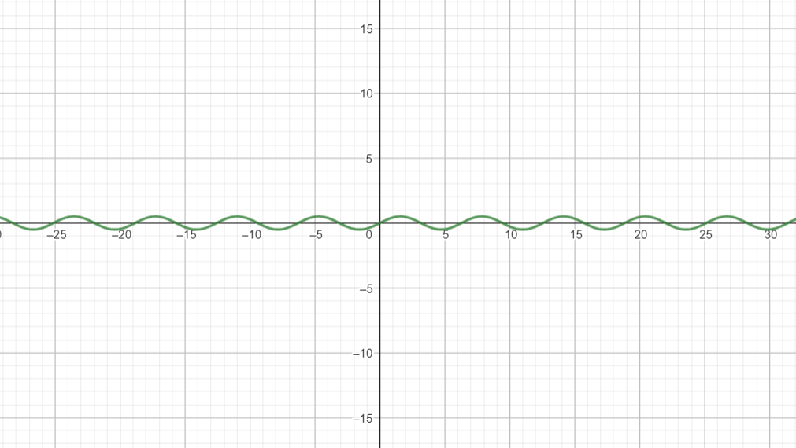
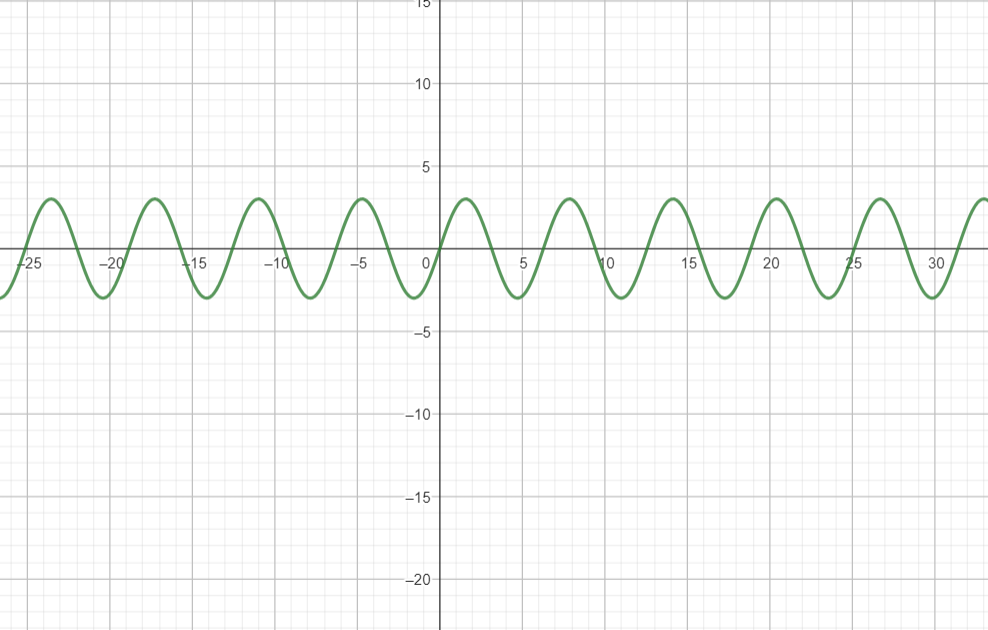
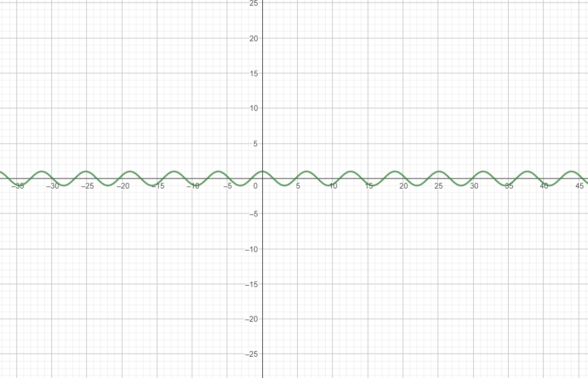
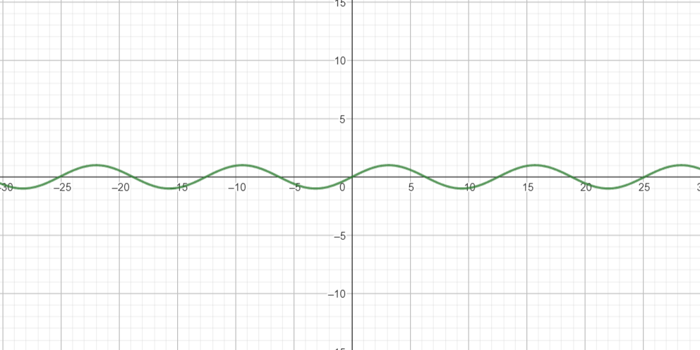
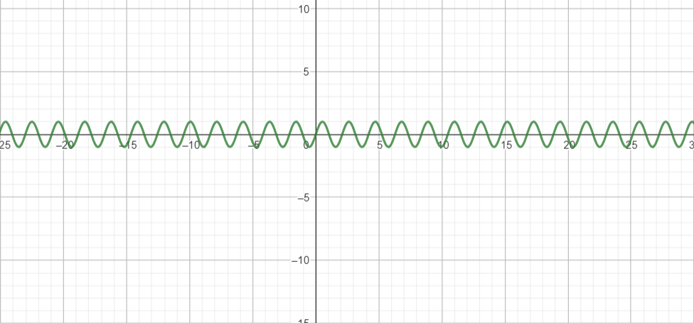
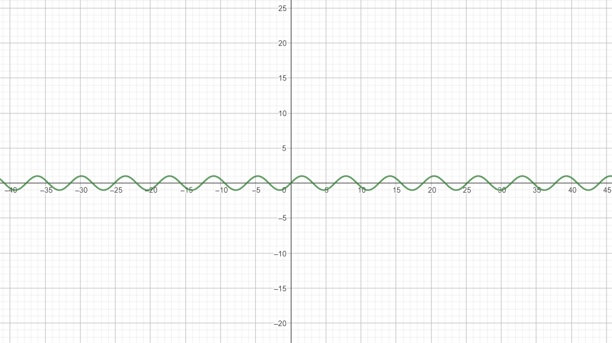

Las ondas electromagnéticas son perturbaciones que se propagan a través del espacio, llevando consigo campos eléctricos y magnéticos. Estas ondas son generadas por cargas eléctricas en movimiento y se pueden clasificar en diferentes rangos según su frecuencia y longitud de onda.
La frecuencia de una onda electromagnética se refiere al número de ciclos completos que se repiten en un segundo. Se mide en hercios (Hz) y determina la cantidad de veces que el campo eléctrico y magnético de la onda oscilan en un segundo. En el contexto de las ondas electromagnéticas, la frecuencia está relacionada con la energía de la onda, donde frecuencias más altas corresponden a una mayor energía.
La longitud de onda de una onda electromagnética se refiere a la distancia entre dos puntos equivalentes en la onda, como dos crestas adyacentes o dos valles adyacentes. Se mide en metros (m) y está inversamente relacionada con la frecuencia de la onda. La fórmula para calcular la longitud de onda es:
Longitud de onda (λ) = Velocidad de propagación (v) / Frecuencia (f)
La velocidad de propagación de las ondas electromagnéticas en el vacío es constante y se denota por la letra 'c'. En el vacío, la velocidad de propagación de la luz es de aproximadamente 299,792,458 metros por segundo (m/s). Esta velocidad no depende de la frecuencia ni de la longitud de onda de la onda electromagnética.
Sin embargo, al propagarse en otros medios como el aire, el agua o los materiales sólidos, la velocidad de propagación de las ondas electromagnéticas puede cambiar. Factores como la densidad y composición del medio pueden influir en la velocidad de propagación de las ondas electromagnéticas en esos medios.
La modelación matemática es una herramienta fundamental en diversas áreas del conocimiento para comprender y predecir fenómenos del mundo real. Consiste en utilizar conceptos y técnicas matemáticas para representar y analizar situaciones reales, permitiendo obtener conclusiones y tomar decisiones informadas.
La modelación matemática es el proceso de crear representaciones matemáticas de fenómenos del mundo real. Consiste en utilizar ecuaciones, fórmulas y otros métodos matemáticos para describir y analizar situaciones complejas. La modelación matemática permite comprender y predecir el comportamiento de sistemas físicos, sociales o naturales, lo que ayuda a tomar decisiones informadas y resolver problemas en diversas áreas.
En la modelación matemática, se emplean variables para representar las características o propiedades de un sistema. Estas variables pueden ser cuantitativas o cualitativas, y se utilizan para formular ecuaciones que relacionan las diferentes magnitudes involucradas en el sistema. Las ecuaciones matemáticas describen las relaciones entre las variables y permiten realizar análisis, simulaciones y predicciones sobre el sistema modelado.
La validación de un modelo matemático consiste en comparar los resultados obtenidos mediante la modelación con datos reales o con resultados experimentales. Esto permite verificar la precisión y confiabilidad del modelo, así como identificar posibles mejoras o ajustes necesarios.
La modelación matemática tiene numerosas aplicaciones en diversos campos, como la física, la ingeniería, la economía, la biología y la epidemiología, entre otros. Permite entender fenómenos complejos, predecir comportamientos, optimizar procesos, tomar decisiones fundamentadas y desarrollar nuevas tecnologías.
Las gráficas de funciones en cálculo son representaciones visuales que muestran la relación entre una variable independiente y una variable dependiente. Estas gráficas permiten visualizar la forma y características de la curva generada por la función, lo que facilita el análisis y comprensión de conceptos fundamentales en el cálculo.
En el campo de la matemática y específicamente en el cálculo, las gráficas de funciones desempeñan un papel fundamental. Las funciones son relaciones entre conjuntos de números, donde cada elemento del conjunto de entrada se asocia con un único elemento del conjunto de salida.
Las gráficas de funciones nos permiten visualizar la relación entre la variable independiente (por lo general, representada en el eje x) y la variable dependiente (representada en el eje y). Al trazar los puntos (x, y) que satisfacen la función, podemos observar la forma y características de la curva resultante.
En cálculo, el análisis de las gráficas de funciones es esencial para comprender conceptos como límites, continuidad, derivadas e integrales. Las gráficas pueden revelar información importante sobre el comportamiento de la función, como puntos críticos, asíntotas, concavidad y cambios de tendencia.
Además, al utilizar software de gráficos o calculadoras gráficas, es posible trazar gráficas de funciones de manera más precisa y explorar diferentes rangos de valores, lo que facilita la comprensión de las propiedades y características de la función en estudio.
f(x) = 1/2 sen(x)
f(x) = 3sen(x)
f(x) = cos(x)
f(x) = sen(x/2)
f(x) = sen(3x)
f(x) = sen(x)
